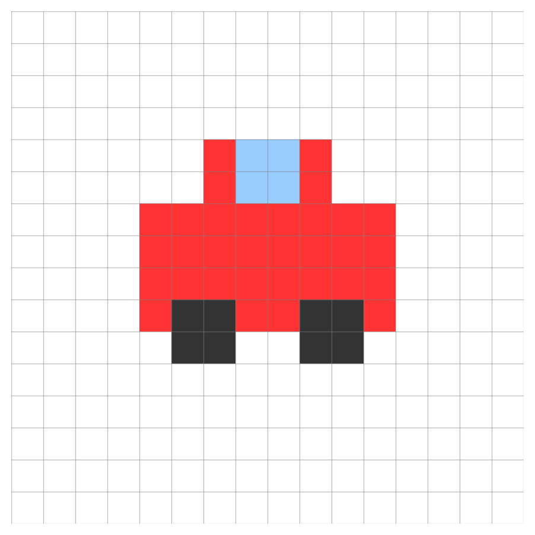
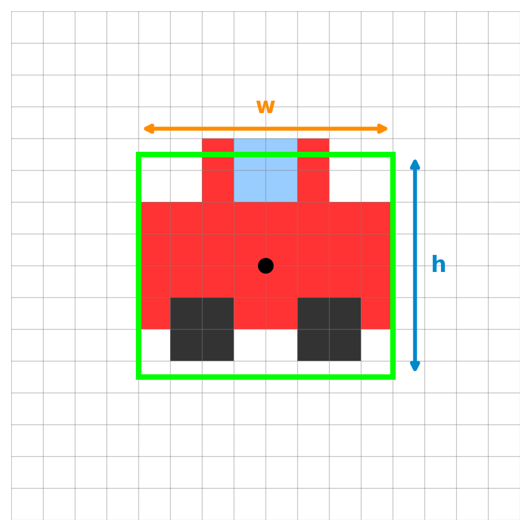
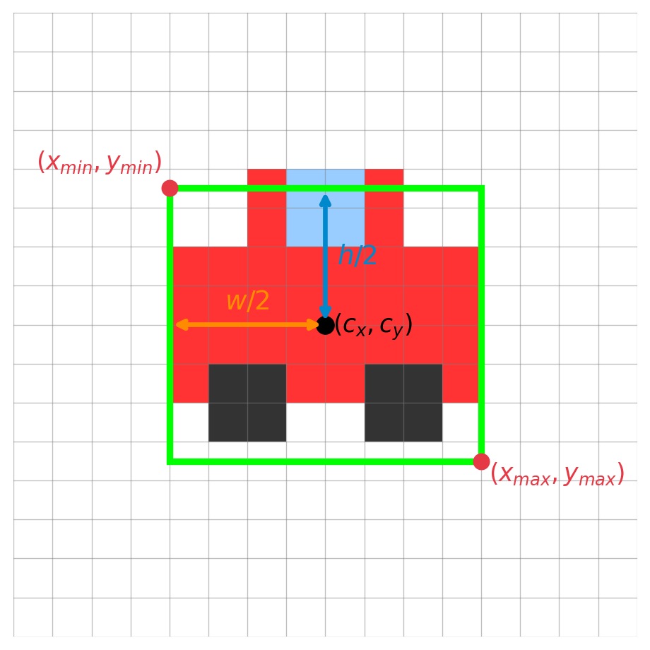
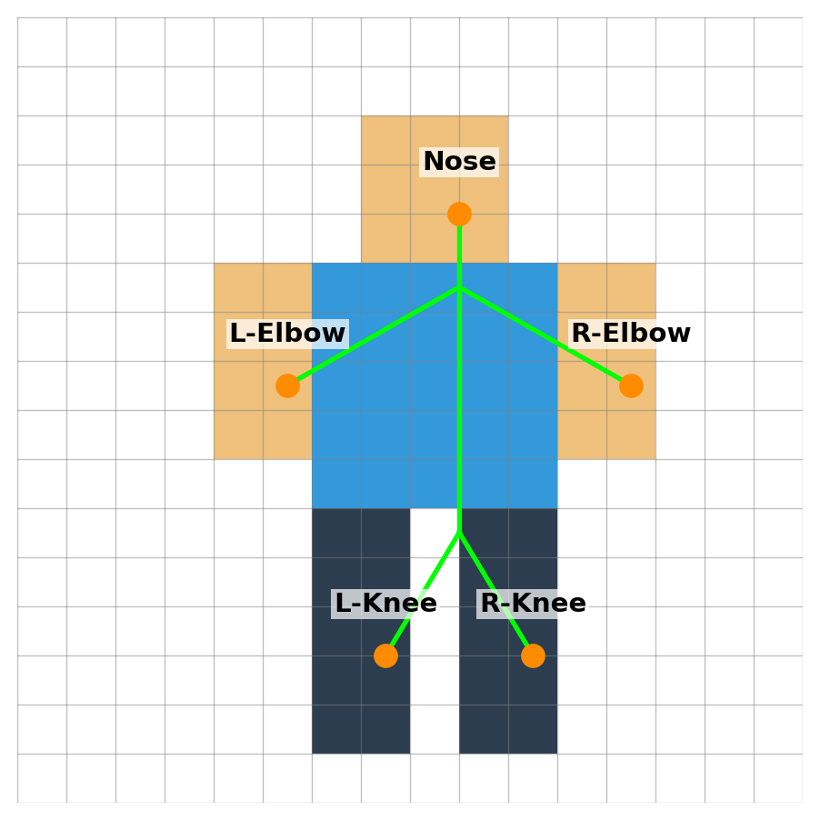
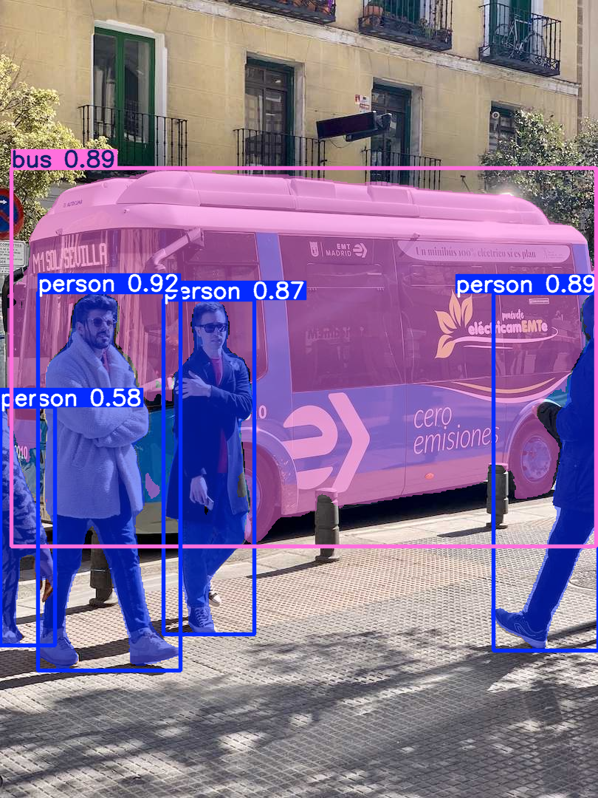
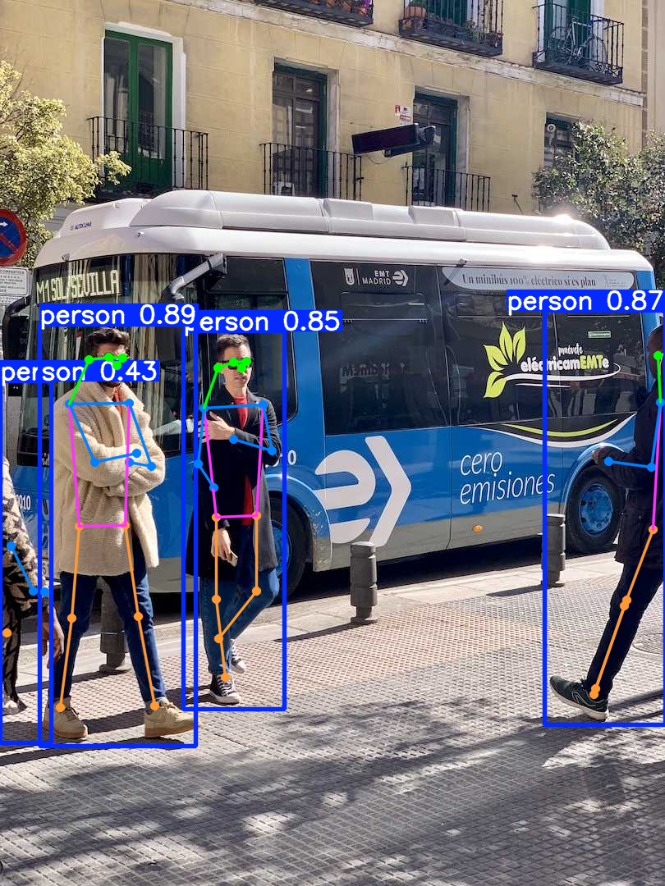
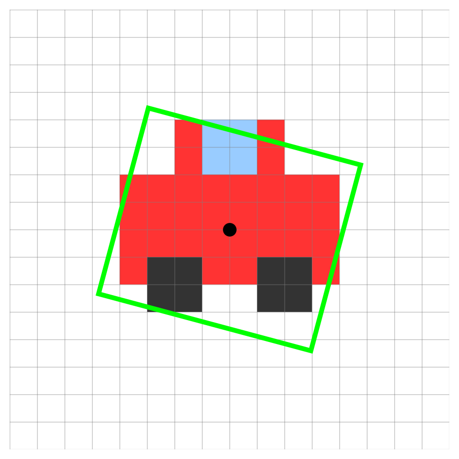

Ultralytics YOLO Foundations: Part 1
Tasks & Inference
2026-04-06
1. First Steps: What can YOLO do?
Start using AI immediately without training!
Programs vs. Machine Learning
We’ll explore each of these output shapes hands-on during this session!
AI Model for Computer Vision
The YOLO CLI Structure
Interacting with Ultralytics is simple:
yolo TASK MODE ARGS
- TASK: What to solve? (
detect,segment,classify,pose,obb) - MODE: What ML stage? (
predict,train,val,export,track,benchmark) - ARGS: Settings like
model=yolo26n.ptorsource="image.jpg"
Predefined Classes & Weights
Models pre-trained on the COCO dataset recognize 80 common classes right out of the box. Using .pt models means we utilize these pre-learned weights without training!
Model Naming Convention (e.g., yolo26n-seg.pt, yolo11x-cls.pt):
- Family: e.g.,
yolo26,yolo11 - Size:
n(Nano, fastest) up tox(Extra Large, most accurate) - Task: default is detection.
-seg(Segmentation),-cls(Classification),-pose(Pose Estimation)
2. Exploring Tasks (Live!)
Let’s see the tasks in action using the predict mode.
Image Classification Output Concept

The model outputs probs, a probability for every possible class:
| Class ID | Class Name | Probability |
|---|---|---|
| 0 | car | 0.95 |
| 1 | bus | 0.03 |
| 2 | person | 0.01 |
| … | … | … |
From probs to top1

Ultralytics pre-computes the answer for us:
probs: Raw probability array for all classes.probs.top1→0: Index of the highest-probability class.probs.top1conf→0.95: Its confidence score.
Single-Class vs. Multi-Label Classification We just read top1 that is single-class (one winner). But because probs scores every class, we can also do multi-label classification: keep all classes whose probability exceeds a threshold (e.g., prob > 0.50) to assign several labels to one image.
Image Classification in Action
Identify what the entire image contains.
# Python Equivalent
from ultralytics import YOLO
model = YOLO("yolo26n-cls.pt")
results = model.predict(source="https://ultralytics.com/images/bus.jpg")
# Access Output Format
probs = results[0].probs
print(f"Top-1 Class: {probs.top1}") # Index of the most likely class
print(f"Top-1 Confidence: {probs.top1conf}") # Confidence score
print(f"All Probabilities: {probs.data}") # Tensor of all class probabilitiesDocs Reference: Classification
Classification Output Example

Object Detection Output & Confidence

Model Output:
cx, cy(7.5, 7.5): The center coordinates.w(8.0) &h(7.0): The box width and height.conf(0.85): The confidence score.cls(0): The class ID.
Filtering Predictions We use a Confidence Threshold to automatically drop weak predictions (e.g., ignoring any box with conf < 0.50).
Confidence: Model’s Belief vs. Ground Truth
- Question: Does
conf=1.0mean there is a true object 100% of the time?
- Answer: No.
- Confidence is just a “feeling”: How strongly the model believes this is the answer.
- It does NOT guarantee the answer is correct in the real world.
You’ll learn how to actually measure correctness in Part 4 using Precision and Recall
Mapping to Bounding Boxes

Mapping to \((x_{min}, y_{min}, x_{max}, y_{max})\):
\[ \begin{align*} x_{min} &= cx - \frac{w}{2} = 7.5 - 4.0 = 3.5 \\ y_{min} &= cy - \frac{h}{2} = 7.5 - 3.5 = 4.0 \\ x_{max} &= cx + \frac{w}{2} = 7.5 + 4.0 = 11.5 \\ y_{max} &= cy + \frac{h}{2} = 7.5 + 3.5 = 11.0 \end{align*} \]
The Concept of N Objects
Rarely does an image contain exactly one object!
- YOLO evaluates the image and can predict multiple bounding boxes at once.
- The single 6-element array
[cx, cy, w, h, conf, cls]is stacked \(N\) times. - Resulting Output Shape: \((N, 6)\) (where \(N\) is the number of detected objects).
Object Detection in Action
Find and localize objects using bounding boxes.
Docs Reference: Detection
Deep Dive: Accessing Bounding Boxes
The result.boxes object provides several ways to access coordinates:
.xyxy: \([x_{min}, y_{min}, x_{max}, y_{max}]\) (Top-left, Bottom-right).xywh: \([c_x, c_y, w, h]\) (Center coordinates, width, height).xyxyn/.xywhn: Normalized versions (values between 0.0 and 1.0)
Code Example:
Detection Output Example

The Problem with Absolute Pixels
Why not just train the model on absolute pixel values like w = 8.0?


- Images come in all shapes and sizes (4K, 1080p, square, portrait).
- A car that is
800pixels wide in a 4K image might only be200pixels wide in a 1080p image. - If the model learns “cars are 800 pixels wide”, it will fail on smaller images!
The Solution: Normalized Coordinates
Instead of pixels, we teach the model using fractions of the image size (0.0 to 1.0).
- \(cx_{norm} = cx_{pixel} / image\_width\)
- \(w_{norm} = w_{pixel} / image\_width\)
A car that takes up half the image width is always \(w = 0.5\), regardless of whether the image is 4K or 1080p!
Training vs. Predicting You MUST provide normalized coordinates (0.0 to 1.0) when training the model. However, when you use model.predict(), the Ultralytics Python API conveniently un-normalizes them back into standard absolute pixels (like boxes.xyxy) for immediate use!
Instance Segmentation Output Concept

Model Output (Mask / Polygon):
- Mask Tensor: A 2D array (bitmap) of pixels indicating the object’s exact shape (
1= object,0= background). - Coordinates: Sequence of \((x, y)\) polygon coordinates derived from the mask.
conf(0.89): Confidence score.cls(0): Class ID.
Instance Segmentation in Action
Outline the exact shape (pixels) of each object instance.
# Python Equivalent
from ultralytics import YOLO
model = YOLO("yolo26n-seg.pt")
results = model.predict(source="https://ultralytics.com/images/bus.jpg")
# Access Output Shape and Data
masks = results[0].masks
print(f"Masks shape: {masks.data.shape}") # (N, H, W) -> N masks of HxW size
print(masks.xy) # Polygon coordinatesDocs Reference: Segmentation
Segmentation Output Example

Pose Estimation Output Concept

Model Output (Keypoints):
x, y: Coordinate pair for each predefined keypoint.kp_conf(per keypoint): Confidence score for each keypoint’s location.conf(0.92): Overall person detection confidence score.cls(0): Class ID (always 0 = person for pose models).
Pose Estimation in Action
Estimate human body keypoints (elbows, knees).
# Python Equivalent
from ultralytics import YOLO
model = YOLO("yolo26n-pose.pt")
results = model.predict(source="https://ultralytics.com/images/bus.jpg")
# Access Output Shape and Data
keypoints = results[0].keypoints
print(f"Keypoints shape: {keypoints.data.shape}") # (N, 17, 3) -> N persons, 17 keypoints, (x, y, conf)
print(keypoints.xy) # Keypoint coordinatesDocs Reference: Pose
Pose Estimation Output Example

OBB (Oriented Bounding Box) Output Concept

Model Output (Oriented Box):
cx, cy: The center coordinates.w&h: The box width and height.angle: The rotation angle of the box.conf: The confidence score.cls: The class ID.
OBB in Action
Detect objects with oriented bounding boxes (useful for aerial/satellite imagery or rotated objects).
from ultralytics import YOLO
model = YOLO("yolo26n-obb.pt")
results = model.predict(source="https://ultralytics.com/images/boats.jpg")
# Access Output Shape and Data
obb = results[0].obb
print(f"OBB shape: {obb.data.shape}") # (N, 7) -> N boxes: cx, cy, w, h, angle, conf, cls
print(obb.xywhr) # Center x, y, width, height, rotation angleDocs Reference: OBB
OBB Output Example

Object Tracking in Action
Assign distinct IDs to objects and track them continuously across video frames!
from ultralytics import YOLO
model = YOLO("yolo26n.pt")
# Use track() with stream=True for memory-efficient video processing
results = model.track(source="path/to/video.mp4", stream=True)
# Iterate through the video frames
for result in results:
boxes = result.boxes
if boxes.id is not None:
# Extract IDs as a list of integers
ids = boxes.id.int().tolist()
print(f"Tracking IDs: {ids}") # e.g., [1, 2]Docs Reference: Tracking
Demonstration: Object Tracking
Predict Usage (Python): Batch Input
Process multiple sources or directories efficiently!
from ultralytics import YOLO
# Load your model
model = YOLO("yolo26n.pt")
# Option 1: A list of specific sources
sources = [
"https://ultralytics.com/images/bus.jpg",
"path/to/local/image.jpg",
"another_image.png"
]
results = model.predict(source=sources)
# Option 2: An entire directory
# results = model.predict(source="path/to/my_images_folder/")Predict Usage (Python): Processing Results
Process the batch results or use a memory-efficient stream.
Stream/Generator: For very large datasets, you can use stream=True in the predict call:
Conclusion
Wrapping Up Day 1
Summary
- YOLO Basics: We explored how to use the CLI and Python API for various tasks.
- Tasks: Object Detection, Image Classification, Instance Segmentation, Pose Estimation, and OBB.
- Coordinates: The importance of normalized coordinates over absolute pixels.
- Inference: How to predict on single images, videos, and batches efficiently.
Next Steps
Next up: Real World Use Cases & Solutions
- Learn how to extract actionable insights from trained models.
- Discover out-of-the-box solutions for real-world problems.
- Integrate object tracking, counting, and more into your applications.
Q&A
Thank You!
Any questions?